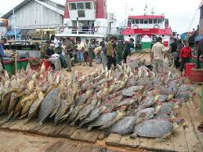

Rampant poaching and over exploitation
Turtles are fighting for their survival and they are frequent victims of by-catch. Poaching has negative effects on nesting populations. Poaching incidents have been extensively reported in Souteast Asia. Sea turtles are under heavy exploitation measures since humans are harvesting their meat, shell and eggs.
The international union of conservation of nature has classified(IUCN) all seven turtle species ranging from vulnerable to critically endangered.
What we can do:
- We can volunteer to help monitor nesting groungs and help save the turtle eggs from poahers and also help hatchling turtles to reach the sea. For more solutions visitEarthwatch.
This is a rescued green sea turtle from poachers: